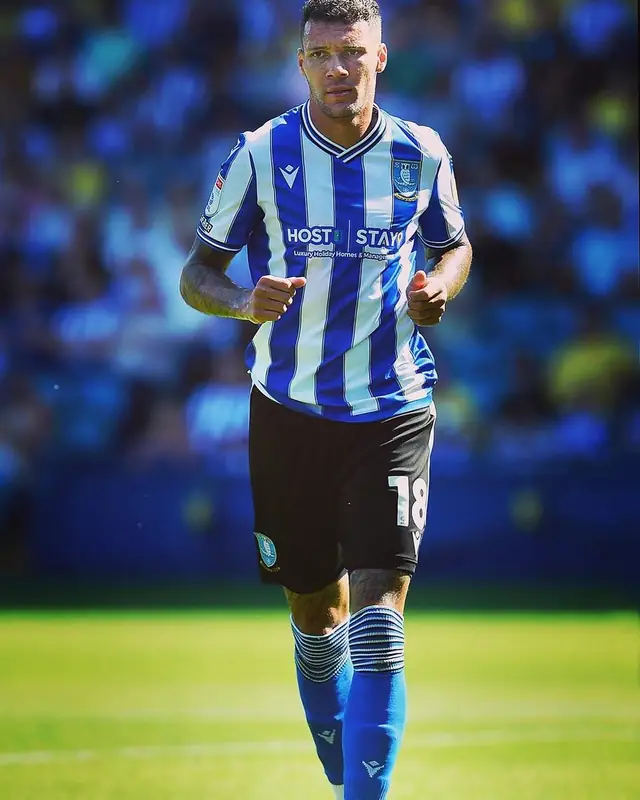
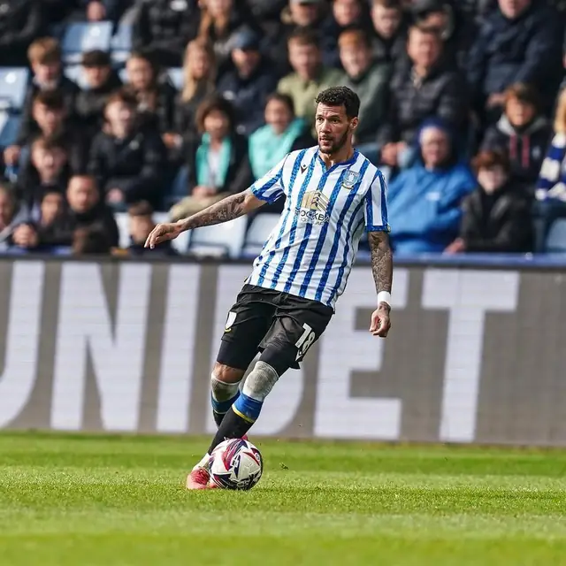

Owner
Marvin Johnson
Owner, MNNJ Exterior Property Care
- Position
- Winger / wing-back
- From
- Birmingham
- Senior career
- 2009 – 2026
- Now playing for
- Your property
About MNNJ
MNNJ Exterior Property Care is owned and run by Marvin Johnson — a winger who spent more than a decade in professional football before swapping match days for roofs, gutters and driveways.
Owner, MNNJ Exterior Property Care
The story
Marvin Johnson was born in Birmingham and came up the hard way — from non-league football with Solihull Moors, Romulus and Kidderminster Harriers to the Scottish Premiership with Motherwell, then Oxford United, Middlesbrough and four seasons at Sheffield Wednesday, before finishing at Port Vale.
Being early, preparing properly, doing the unglamorous work every day.
A career like that is built on habits nobody sees, and on being judged by the result. Those habits didn't retire when he did.
MNNJ is where they go now. Every property gets the same approach — look at it properly, agree the plan, do the job right, and leave it in a state you'd put your name on.
The career
Non-league beginnings in the West Midlands.
Three seasons, and the form that earned a move north.
Scottish Premiership.
Back to England.
Championship, with a loan at Sheffield United in 2018–19.
Four seasons at Hillsborough.
The last stop in the professional game.
New club. Same standards.


What carried over
On the day and at the time we said. If anything changes, you hear it from us first.
The right method for the surface, decided before the hose comes out — not halfway through.
Edges, corners and the tidy-up. The last ten minutes are what you notice for the next ten months.
@90mjohn — the football years, and what he's working on now.